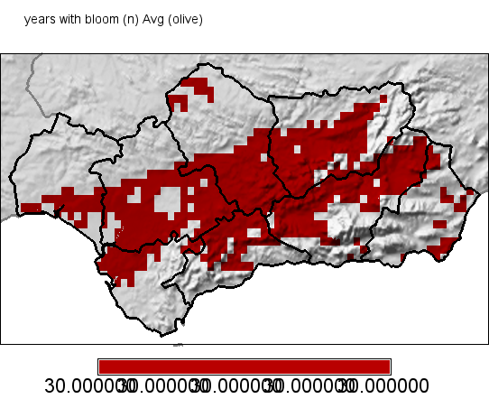
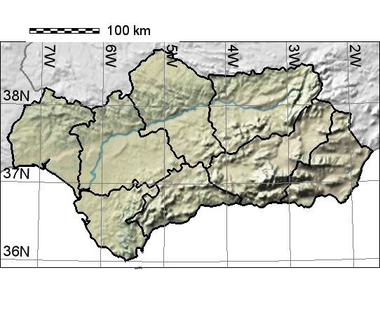

Report for "years with bloom (n)"
Output maps


Please, click on images to see stat report.
You may also see raster statistics as barcharts (zoned and overall) and as cell frequency histogram.
Mapping parameters
- Parameter mapped: 17
- Lower cutting point: 0
- Upper cutting point: none
- Region clip:
- Altitude clip: 2000 m
- Stations above altitude clip were used to interpolate: yes
Input file log
This log reports names of input files used for analysis:
- BloomYr_Olive_30set19_Avg
- BloomYr_Olive_30set19_Std
GIS script syntax used:
andalusia
w=0 g=0 l=0 x=0
a=0 d=0 u=0 c=0
r=1 p=1
SaveDir=/c/cygwin/home/andy/outfiles/andalusia_olive_nofly_BloomYr longitude=5 latitude=6 year=11
parameter=17 interpolation=bspline numpoints=3
lowercut=0 uppercut=0 legend1=years with bloom (n) provinces=all
alt=2000 resolution=1 lowBarCol= upBarCol=
crop=olive crop_threshold=0.20
(Wed, 02 Oct 2019 20:59:43 +0200)